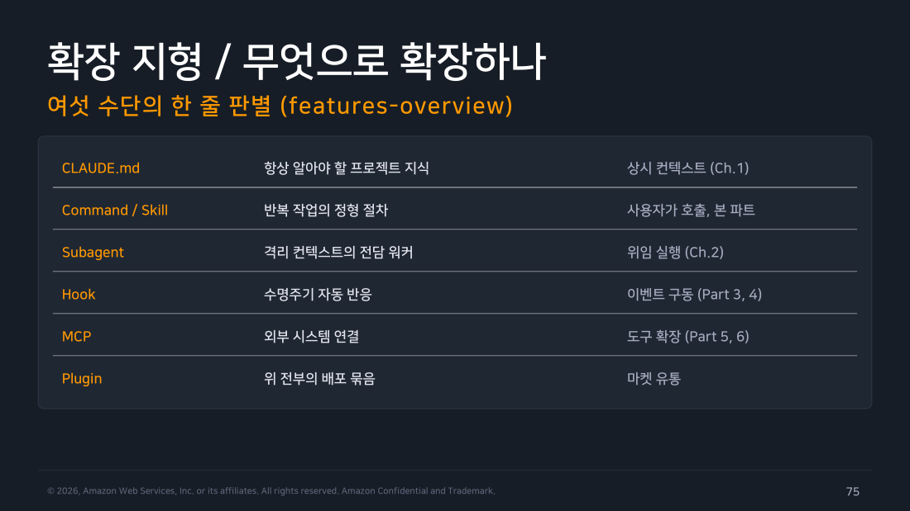
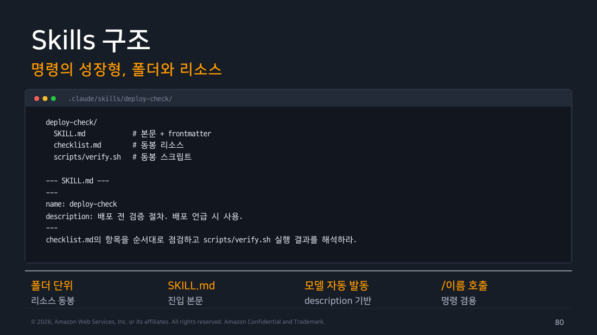

Part 7 — Commands와 Skills¶
한 줄 요약¶
Command는 반복해서 쓰는 정형 프롬프트를 Markdown 파일로 만든 것입니다. 공식문서에서 Skill은 별개 시스템이 아니라 같은 메커니즘을 폴더 단위로 확장한 형태입니다.
왜 알아야 하나¶
처음에는 비교표를 외우기보다 인자 없는 짧은 절차 하나를 이름으로 다시 실행하는 것부터 익히면 됩니다. W1의 재현 기록을 /check-docs 같은 Command/Skill로 옮기면 같은 입력으로 같은 점검을 반복할 수 있습니다. 역할과 컨텍스트를 격리해야 할 때는 W2의 Subagent를 씁니다. Hook은 이벤트에 자동으로 반응하고, MCP는 외부 시스템을 연결합니다.
첫 Command/Skill의 경계¶
Command/Skill은 반복 절차를 /이름 또는 claude -p "/이름"으로 호출할 때 실행됩니다. 본문·인라인 실행·권한 중 하나가 실패하면 호출도 실패합니다. 기존 Permission에 없는 권한을 새로 만들어주지는 않습니다. 개인 개발자는 인자와 셸 실행이 없는 파일 하나부터 검증합니다. 조직 관리자는 disable-model-invocation과 disableSkillShellExecution 등으로 위험한 절차의 자동 호출과 셸 실행을 통제합니다.
1. 커스텀 명령 기본 — Markdown 한 장이 슬래시 명령¶
.claude/commands/summarize.md 파일을 만들면 /summarize 명령이 생깁니다. 파일명이 명령 이름이고, 하위 폴더는 네임스페이스가 되어 /dir:name 형태로 호출합니다. 팀과 공유할 명령은 .claude/commands/, 개인 명령은 ~/.claude/commands/에 저장합니다. Part 1에서 본 라이브 리로드가 적용되므로 파일을 저장하면 바로 반영됩니다.
첫 파일은 인자 없이 작성합니다.
/check-docs가 같은 점검을 반복하면 첫 단계는 끝입니다. 인자 인덱스, ! 인라인 실행, context: fork, frontmatter는 필요할 때 아래 절을 참고해 추가합니다.
2. Command와 Skill의 관계¶
공식문서(code.claude.com/docs/en/skills)에는 "Custom commands have been merged into skills."라고 적혀 있습니다. .claude/commands/deploy.md와 .claude/skills/deploy/SKILL.md는 둘 다 /deploy를 만들고 같은 방식으로 동작합니다. Command는 Skill과 별개의 시스템이라기보다 폴더 없이 파일 하나로 쓰는 단순한 Skill에 가깝습니다.
Lab 4에서 standup Command를 Skill로 옮겨 이 동작을 확인했습니다.
Command 버전 (파일 하나):
.claude/commands/standup.md
Skill 버전 (폴더 + 파일 여러 개):
.claude/skills/standup/
SKILL.md # 지시문(Command 파일과 거의 같은 내용)
checklist.md # 새로 추가한 동봉 파일
SKILL.md에 "checklist.md도 같이 확인해라"라고 쓰자 Claude가 같은 폴더의 checklist.md도 읽어 응답에 반영했습니다. 아래 직접 해보기에 로그가 있습니다. Skill은 체크리스트와 스크립트 같은 자산을 폴더에 함께 넣을 수 있고, context: fork 같은 고급 옵션도 지원합니다. 기존 .claude/commands/ 파일은 계속 작동하며 name·paths를 제외한 같은 frontmatter를 지원합니다.
Warning
라이브 리로드에 예외가 하나 있습니다. 이미 감시 중인 .claude/skills/ 안에서 파일을 추가·수정하는 건 즉시 반영됩니다. 프로젝트에 .claude/skills/ 디렉터리 자체를 처음 만들거나 새 skill/command 디렉터리를 반영할 때는 재시작 또는 /reload-skills로 재스캔합니다.
3. 여섯 가지 확장 수단¶
지금까지 배운 확장 수단은 다음처럼 구분합니다.
- CLAUDE.md — 프로젝트에서 항상 알아야 할 지식을 상시 컨텍스트에 넣습니다(1주차).
- Command/Skill — 반복 작업의 절차를 파일 하나나 자산을 포함한 폴더로 저장합니다.
- Subagent — 컨텍스트를 격리한 전담 워커에게 작업을 맡깁니다(2주차).
- Hook — 수명주기 이벤트가 발생하면 자동으로 동작합니다(Part 3·4).
- MCP — 외부 시스템을 연결해 도구를 추가합니다(Part 5·6).
- Plugin — 위 기능을 묶어서 배포합니다.

▲ 교재 슬라이드 75 — 확장 지형 / 무엇으로 확장하나
Note
2주차 part-03의 트리는 작업을 병렬화하는 방법(서브에이전트 vs 직접 처리)을 골랐습니다. 이 파트의 트리는 반복 절차를 어떤 형태로 저장할지 고릅니다.
4. 인자 받기 — $ARGUMENTS와 위치 인자¶
명령 본문에서 $ARGUMENTS는 호출 시 넘긴 전체 문자열을 가리킵니다. 개별 인자는 $ARGUMENTS[N](0부터 시작하는 인덱스)으로 꺼내거나 그 축약형인 $N을 씁니다. 즉 $0이 첫 번째 인자, $1이 두 번째 인자입니다.
---
description: 이슈 번호로 수정 착수
argument-hint: "<이슈번호> [우선순위]"
---
이슈 #$0 을 조사해 수정하라.
우선순위는 $1, 전체 지시: $ARGUMENTS
v2.1.239 실측에는 $1이 첫 인자로 치환된 기록이 있다
Lab 4의 기존 Command 파일에서는 $1에 Jade가 채워졌습니다. 하지만 공식 계약은 0-based이며 $0/$ARGUMENTS[0]이 첫 인자, $1은 두 번째입니다. 실측 원인을 확인하지 못했으므로 새 Command/Skill 작성 지침에는 $0 또는 $ARGUMENTS[0]만 사용하고, 아래 $1 로그는 해당 버전·구성의 재현 기록으로만 읽습니다.
5. frontmatter 옵션 — 세 그룹으로 묶어서¶
명령에 붙이는 메타데이터는 용도에 따라 세 그룹으로 나눌 수 있습니다.
- 입력 관련 —
argument-hint(자동완성 힌트),description(명령 목록과 모델의 자동 호출 판단에 쓰임, 항상 채우는 습관 필요) - 권한 관련 —
allowed-tools(이 명령 실행 중 쓸 수 있는 도구를 최소 권한 원칙으로 제한),disable-model-invocation(모델이 자동으로 못 부르게 막아 사용자가 명시적으로 호출할 때만 실행) - 실행 관련 —
model(전용 모델 지정, 무거운 분석엔 opus),hooks(활성화된 동안만 유효한 훅,once옵션으로 세션당 1회 제한 가능)
6. 컨텍스트 수집 — !실행과 @참조¶
명령 본문에서 셸 명령을 !`백틱`으로 감싸면 호출 시점에 실행되고 그 결과가 본문에 들어갑니다. @경로는 파일을 컨텍스트에 첨부합니다.
---
description: PR 컨텍스트를 모아 리뷰 준비
allowed-tools: Bash(git *), Read
---
## 현재 상태
- 브랜치: !`git branch --show-current`
- 변경: !`git diff --stat main...HEAD`
## 기준 문서
@docs/review-checklist.md
위를 바탕으로 리뷰 관점 5가지를 제시하라.
두 방식은 명령을 저장한 시점이 아니라 호출하는 순간의 브랜치·diff·파일 내용을 가져옵니다. Lab 4에서 !git log --oneline -5`를 넣었을 때도 호출 시점의 커밋 목록이 반영됐습니다. 조직은disableSkillShellExecution` 같은 키로 인라인 실행을 차단할 수 있습니다.
7. 스킬 고급 옵션 (필요할 때 참고)¶
context: fork를 Skill에 지정하면 무거운 절차를 별도의 격리된 컨텍스트에서 실행하고 요약만 본 세션으로 가져옵니다. 본 세션의 대화 기록은 가져가지 않으므로 긴 작업이 본 세션의 컨텍스트를 많이 차지할 때 씁니다. 선택 심화 옵션으로는 실행 중 도구를 제한하는 allowed-tools, 사용자가 직접 호출할 때만 실행하게 하는 disable-model-invocation, 기본 번들 스킬을 끄는 disableBundledSkills가 있습니다. 스킬을 플러그인으로 묶으면 마켓이나 팀 배포 경로로 배포할 수 있습니다.

▲ 교재 슬라이드 80 — Skills 구조
8. 선택 가이드¶
선택할 때는 호출 주체(사용자 명시 호출 또는 모델 자동 판단)와 컨텍스트 격리 필요 여부를 봅니다.
flowchart TD
Q["반복되는 작업을<br/>어떻게 굳힐까"]
Q --> A{"짧은 정형 프롬프트?"}
A -->|"예"| C["<b>Command 한 장</b><br/>요약, 번역, 템플릿"]
A -->|"아니오, 절차+동봉 자산"| B{"무거운 실행이라<br/>본진 컨텍스트를 보호해야 하나?"}
B -->|"아니오"| S["<b>Skill 폴더</b><br/>체크리스트, 스크립트 묶음"]
B -->|"예"| SF["<b>Skill context: fork</b><br/>격리 실행 후 요약 귀환"]
Q --> D{"역할·도구가 제한된<br/>전담 워커가 필요한가?"}
D -->|"예"| SA["<b>Subagent</b><br/>리뷰어, 스캐너 (Ch.2)"]
Q --> E{"이벤트에 자동 반응해야 하나?"}
E -->|"예"| H["<b>Hook</b><br/>수명주기 구동 (Part 3·4)"]
style Q fill:#673ab7,stroke:#4527a0,stroke-width:3px,color:#fff
style C fill:#e8f5e9,stroke:#388e3c,color:#000
style S fill:#e8f5e9,stroke:#388e3c,color:#000
style SF fill:#fff3e0,stroke:#ef6c00,color:#000
style SA fill:#e3f2fd,stroke:#1976d2,color:#000
style H fill:#e3f2fd,stroke:#1976d2,color:#0009. 실전 명령과 성장 경로 (요약)¶
교재에는 두 가지 실전 예시가 있습니다. PR 리뷰 명령은 !git diff`로 변경 사항을 모으고 2주차의code-reviewer서브에이전트에게 판정을 맡긴 뒤, 마지막 줄에 머지 가능 여부를 출력합니다. 배포 점검 명령은disable-model-invocation: true를 사용합니다. 배포처럼 되돌리기 어려운 작업은 사용자가/deploy`로 직접 호출하고 체크리스트를 통과했을 때만 배포 명령을 제시하도록 설계했습니다. 명령을 직접 실행하지는 않습니다.
처음에는 개인 경로(~/.claude/commands)에서 검증합니다. 팀과 공유할 때는 프로젝트에 커밋하고, 여러 저장소에서 공통으로 쓰게 되면 플러그인으로 묶어 배포합니다.
직접 해보기 — Lab 4: 커스텀 명령을 헤드리스에서 호출¶
교재는 명령·인자·인라인 컨텍스트 수집을 설명하지만, -p 헤드리스에서도 작동하는지는 명시하지 않습니다. 이를 직접 확인했습니다.
<!-- .claude/commands/standup.md -->
---
description: 최근 커밋을 바탕으로 스탠드업 요약 작성
argument-hint: "<이름>"
---
git log --oneline -5 결과를 바탕으로 $1 의 스탠드업 보고를 세 줄로 작성하라.
최근 커밋:
!`git log --oneline -5`
$ claude -p "/standup Jade" --output-format json
{..., "result":"Jade의 스탠드업 보고:\n\n- 프로젝트 초기 설정(init) 완료\n
- lab4 관련 초기 세팅 작업 진행\n- 다음 작업 항목은 커밋 로그에 아직 반영되지 않음"}
$1이 "Jade"로 치환됐습니다. 결과의 "init"과 "lab4 관련 초기 세팅"도 스크래치 저장소의 두 커밋(init, lab4 setup)과 일치했습니다. !git log --oneline -5`` 인라인 실행이 호출 시점에 평가되어 컨텍스트에 들어간 것도 확인했습니다.
v2.1.239 실측 — 이 Command의 인자·인라인 실행은 -p에서 반영됐다
이 실습에서는 명령 파일의 슬래시 호출, 인자 치환, 인라인 셸 결과가 -p에 반영됐습니다. 이를 헤드리스 전반의 동일성으로 일반화하면 안 됩니다. -p에는 permission host가 없고 UI 명령, project MCP 승인, 비동기 훅 종료가 대화형과 다를 수 있으므로 CI에 넣을 절차는 별도로 검증합니다.
이어서 명령을 Skill로 옮겼습니다. .claude/commands/standup.md를 지우고 .claude/skills/standup/SKILL.md와 checklist.md(어제 완료·오늘 할 일·블로커 세 항목)를 만든 뒤 같은 방식으로 헤드리스 호출했습니다.
$ claude -p "/standup Jade" --output-format json
{..., "result":"Jade의 스탠드업 보고 (2026-08-23):\n\n
- 어제: `a87f415 lab4 setup`, `e7c58ad init` 커밋으로 lab4 초기 설정과 프로젝트 초기화를 완료함.\n
- 오늘: lab4 설정 위에서 다음 작업 항목을 구체화하고 진행할 예정.\n
- 블로커: 현재 없음."}
Command에서처럼 $1과 !실행`이 작동했습니다. 결과의 "블로커"는 명령 본문이 아니라 새checklist.md에만 있던 항목이므로, 이 파일도 읽혔음을 확인했습니다..claude/skills/디렉터리를 프로젝트에 처음 만들었지만 재시작 없이 작동했습니다. 공식문서의 "이미 실행 중인 세션에서 새 스킬 디렉터리를 만들면 재시작이 필요하다"는 경고와는 모순되지 않습니다.-p` 헤드리스는 호출마다 새 프로세스를 시작하므로 디렉터리가 세션 시작 전에 존재했습니다.
흔한 오해 바로잡기¶
"슬래시 명령은 대화형 세션에서만 쓸 수 있다" — v2.1.239 실습에서는 claude -p "/명령이름 인자" 호출과 인라인 실행이 동작했습니다. 새 문서에는 첫 인자로 $0/$ARGUMENTS[0]을 쓰며, 헤드리스의 UI·권한·MCP·비동기 훅 차이는 별도로 검증합니다.
"Command와 Skill은 서로 다른 두 시스템이다" — 공식문서 기준으로는 같은 메커니즘입니다. Skill이 폴더와 고급 옵션을 추가로 지원하는 확장판에 가깝습니다.
정리¶
Command는 짧은 정형 프롬프트를 파일 하나로 저장한 것입니다. Skill은 같은 메커니즘에 동봉 자산과 고급 옵션을 더합니다. 둘 다 $ARGUMENTS와 $0(첫 인자), !실행/@참조를 지원하며disable-model-invocation`으로 모델의 자동 호출을 막을 수 있습니다. Lab 4는 v2.1.239 구성에서 확인한 headless 재현 기록입니다. CI에서 재사용하기 전에는 UI 명령·권한 host·MCP 승인·비동기 훅 수명을 따로 점검해야 합니다.
출처¶
- Claude Code Deep Dive Workshop — Chapter 4 / Part 7: Commands와 Skills (2026.07 판, s75~86)
- 공식 문서: Commands, Extend Claude with skills